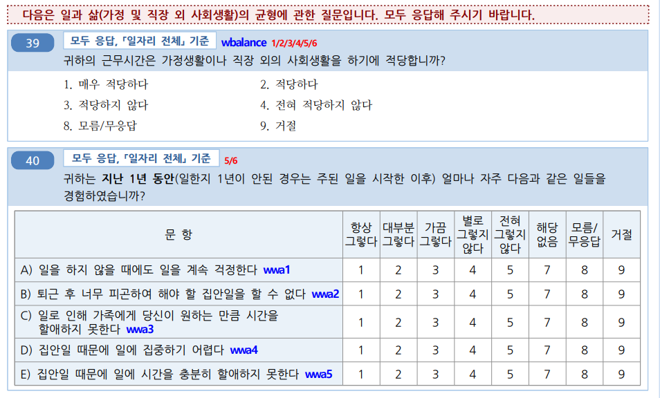

Chapter 8 Tables for public health 3
8.1 데이터 준비
데이터 표를 만드는 실습은 6차 근로환경조사 자료를 통해 실습할 것입니다.. 자료는 안전보건공단, 근로환경조사 원시자료 사이트 (http://kosha.or.kr/kosha/data/primitiveData.do) 에서 신청할 수 있습니다..
rm(list=ls())
if(!require("tidyverse")) install.packages("tidyverse")
if(!require("htmlTable")) install.packages("htmlTable")
if(!require("haven")) install.packages("haven")
if(!require("broom")) install.packages("broom")데이터를 불러오겠습니다. 안전보건공단 홈페이에서 자료를 다운 받는게 원칙입니다. 다만 실습을 빠르게 진행하기 위해서, dspubs.org 페이지에 있는 파일을 이용하겠습니다.
dspubs.org open_data
url <- "https://dspubs.org/webapps/forum/open_data/kwcs6th.sav"
download.file(url, "data/kwcs6th.sav")
kwcs <- read_sav("data/kwcs6th.sav")8.2 분석 주제 선정
우선 수면 장애를 중심으로 연구를 하기로 했습니다. 이때 장시간 근무가 수면장애를 일으킬 수 있다는 가정을 했습니다. 기존 연구에서 유사한 내용이 있었기 때문입니다. 그 이유를 생각해보니, 오래 일하면 어떤 방식으로든 수면시간 자체가 줄어들 것으로 보였기 때문입니다. 우선 sleep disturbance, long working hours per week 이 정해졌습니다. 이후 연구방법론의 혼란변수 선정 방법이나, 연구자의 Domain knowledge에 따른 선정, 새로운 가설 개발 (originality) 위한 변수 선정등을 고려할 수 있습니다. 이러한 내용은 각각의 연구방법론 수업에서 학습하시기를 바랍니다.
여러 토론을 하다보니, 일을 마치고 집에 돌아온 후 해야할 일이 많은 경우 수면장애가 발생할 것 같은 느낌이 들었습니다. 이 것을 확인해 보고자 합니다.
즉, 장시간근로와 일과 삶의 균형에 따른 수면장애 관련성을 연구해 보고 싶습니다.

이제 data manipulation, long wide 변환을 통해 실습을 해보겠습니다.
> 설문지와 변수설명 파일은 아래와 같습니다.
8.2.1 근로환경조사 기본 변수 생성 (선택)
data manipulation에서 실습한 내용을 통해 변수를 실습을 위한 변수를 생성해 보겠습니다. 이에 대한 자세한 과정은 이전 챔터에 있습니다.
# data manip function
Likert5f = function(x){dplyr::recode(as.numeric(x),
"4.Always","3.Often","2.Sometimes", "1.Rarely","0.Never" )}
# data step start ----------
dat1 = kwcs %>%
filter(AGE <70) %>%
filter(AGE >18) %>%
# sleep --------
filter(!is.na(sleep1)&!is.na(sleep2)&!is.na(sleep3)) %>%
filter(sleep1 %in% c(1:5),
sleep2 %in% c(1:5),
sleep3 %in% c(1:5)) %>%
mutate(sleep1in = 5-sleep1,
sleep2in = 5-sleep2,
sleep3in = 5-sleep3
) %>%
mutate(sleepgp = case_when(
sleep1in + sleep2in+ sleep3in >=6 ~ "1.sleep disturbance",
TRUE ~ "0.non distrubance"
)) %>%
# work live balances -------------
filter(!is.na(wbalance), !is.na(wwa1), !is.na(wwa2), !is.na(wwa3), !is.na(wwa4), !is.na(wwa5)) %>%
filter(!is.na(wbalance)) %>%
mutate(wbalancegp = case_when(
wbalance %in% c(1, 2) ~ "0.balance",
TRUE ~ "1.non balance"
)) %>%
mutate(wwa1gp=Likert5f(wwa1), wwa2gp=Likert5f(wwa2), wwa3gp=Likert5f(wwa3),
wwa4gp=Likert5f(wwa4), wwa5gp=Likert5f(wwa5),
) %>%
# job and sex, agegp ----------
filter(!is.na(job1))%>%
filter(job1 %in% c(1, 2, 3)) %>%
mutate(sexgp = case_when(
TSEX ==1 ~ "Men",
TRUE ~ "Women"
)) %>%
mutate(agegp = case_when(AGE <25 ~ "<25", AGE <30 ~ "<30", AGE <35 ~ "<35",
AGE <40 ~ "<40", AGE <45 ~ "<45", AGE <50 ~ "<50",AGE <55 ~ "<55", AGE <60 ~ "<60",
TRUE ~ "\u226560" # 나머지는 모두 >65 (\u2265는 크거나 같다는 symbol)
)) %>%
filter(!is.na(edu)) %>% filter(edu %in% c(1:7)) %>%
mutate(edugp = case_when(
edu %in% c(1:3) ~ "2.middle school or below",
edu %in% c(4 ) ~ "1.high school",
edu %in% c(5:7) ~ "0.university or more"
)) %>%
mutate(njob=case_when(
job1 %in% c(2, 3) ~ "1.njob",
TRUE ~ "0.one-job")) %>%
# pains back -----------
mutate(backpain= case_when(
heal_prob1==1 ~ "pain",
TRUE ~ "no-pain")) %>%
# emp_type,working hours, shiftwork, work life balance -------
filter(!is.na(emp_type)) %>%
filter(emp_type %in% c(1:4)) %>%
mutate(empgp = case_when(
emp_type ==1 ~ "2.own-account worker",
emp_type ==2 ~ "1.employer/self-employer",
emp_type ==3 ~ "0.paid-worker",
emp_type ==4 ~ "3.unpaind family work"
)) %>%
filter(!is.na(wtime_week)) %>%
mutate(whgp=case_when(
wtime_week < 35 ~ "<35",
wtime_week < 40 ~ "<40",
wtime_week < 52 ~ "<52",
wtime_week < 60 ~ "<60",
TRUE ~ "\u226560",
)) %>%
filter(!is.na(wtime_length5)) %>%
filter(wtime_length5 %in% c(1, 2)) %>%
mutate(shiftWork = case_when(
wtime_length5 ==1 ~ "1.shift work",
TRUE ~ "0.non shift work"
)) %>%
filter(!is.na(wtime_resilience)) %>%
mutate(shortReturn = case_when(
wtime_resilience ==1 ~ "1.short return",
TRUE ~ "0.non short return"
)) %>%
filter(!is.na(satisfaction)) %>%
filter(satisfaction %in% c(1:4)) %>%
mutate(satisInv = 5-satisfaction) %>%
mutate(shiftShort=case_when(
shiftWork == "1.shift work" & shortReturn == "1.short return" ~ "3.shift work with short return",
shiftWork == "1.shift work" & shortReturn != "1.short return" ~ "2.shift work",
shiftWork != "1.shift work" & shortReturn == "1.short return" ~ "1.day work with short return",
shiftWork != "1.shift work" & shortReturn != "1.short return" ~ "0.day work",
)) 코드를 간단히 하기 위해 dat1을 저장하겠습니다.
saveRDS(dat1, "data/kwcsData1.rds")8.2.2 함수를 source file 로 저장하기
이전에 만들었던 함수 kwcsTabf.R 이라는 파일로 저장하겠습니다.
이전에 만들었던 함수는 kwcs table 1 함수 만들기에 있습니다. 그 함수를 source 파일로 저장하겠습니다.
- source file 사용
- 함수를 R script로 저장 (“source/kwcsTabf.R”)
- source file 불러오기 (source(“source/kwcsTabf.R”))
- 함수 사용하기.
source("source/kwcsTabf.R")rm(list=ls())
if(!require("tidyverse")) install.packages("tidyverse")
if(!require("htmlTable")) install.packages("htmlTable")
if(!require("haven")) install.packages("haven")
if(!require("broom")) install.packages("broom")
source("source/kwcsTabf.R")
dat1 = readRDS("data/kwcsData1.rds")층화변수, 명목변수, 연속변수를 구성하여 함수를 실행해 보겠습니다.
## Variables selection
stratas = c("sleepgp")
catVars = c(
# interesting
#"wbalancegp",
"wwa1gp", "wwa2gp","wwa3gp","wwa4gp","wwa5gp",
# confounder
#"whgp",
"shortReturn","shiftWork" , "njob",
# demograhpics
"sexgp", "agegp",
"edugp", "empgp" #, backpain"
)
conVars = c("AGE","satisfaction")
tab1 = kwcsTabf(dat1=dat1, stratas = stratas, catVars = catVars, conVars = conVars)
tab1 %>%
setNames(c("", "", "None", "Disturbance", "P value")) %>%
htmlTable(
cgroup = c("", "Sleep disturbance", ""),
n.cgroup = c(2, 2, 1),
tfoot = "P value calculated by Chisq-Test and T-Test",
rnames = FALSE,
caption = "Basic Characteristics according to Sleep disturbance"
) | Basic Characteristics according to Sleep disturbance | ||||||
| Sleep disturbance | ||||||
|---|---|---|---|---|---|---|
| None | Disturbance | P value | ||||
| wwa1gp | Never | 12222 (94.7%) | 684 (5.3%) | <0.001 | ||
| Rarely | 12316 (94.5%) | 714 (5.5%) | ||||
| Sometimes | 9112 (90.3%) | 981 (9.7%) | ||||
| Often | 3456 (82.8%) | 717 (17.2%) | ||||
| Always | 634 (70.0%) | 272 (30.0%) | ||||
| wwa2gp | Never | 12432 (95.4%) | 597 (4.6%) | <0.001 | ||
| Rarely | 13682 (94.1%) | 863 (5.9%) | ||||
| Sometimes | 8882 (89.2%) | 1072 (10.8%) | ||||
| Often | 2460 (79.4%) | 638 (20.6%) | ||||
| Always | 284 (58.9%) | 198 (41.1%) | ||||
| wwa3gp | Never | 13472 (95.2%) | 682 (4.8%) | <0.001 | ||
| Rarely | 13938 (93.1%) | 1040 (6.9%) | ||||
| Sometimes | 7749 (89.9%) | 868 (10.1%) | ||||
| Often | 2314 (79.5%) | 597 (20.5%) | ||||
| Always | 267 (59.6%) | 181 (40.4%) | ||||
| wwa4gp | Never | 18708 (94.1%) | 1169 (5.9%) | <0.001 | ||
| Rarely | 14799 (91.6%) | 1362 (8.4%) | ||||
| Sometimes | 3348 (85.0%) | 592 (15.0%) | ||||
| Often | 805 (80.7%) | 193 (19.3%) | ||||
| Always | 80 (60.6%) | 52 (39.4%) | ||||
| wwa5gp | Never | 19061 (93.9%) | 1245 (6.1%) | <0.001 | ||
| Rarely | 14770 (91.6%) | 1349 (8.4%) | ||||
| Sometimes | 3180 (85.3%) | 550 (14.7%) | ||||
| Often | 682 (79.8%) | 173 (20.2%) | ||||
| Always | 47 (48.0%) | 51 (52.0%) | ||||
| shortReturn | non short return | 36183 (92.5%) | 2927 (7.5%) | <0.001 | ||
| short return | 1557 (77.9%) | 441 (22.1%) | ||||
| shiftWork | non shift work | 35056 (91.9%) | 3073 (8.1%) | <0.001 | ||
| shift work | 2684 (90.1%) | 295 (9.9%) | ||||
| njob | one-job | 37471 (91.9%) | 3317 (8.1%) | <0.001 | ||
| njob | 269 (84.1%) | 51 (15.9%) | ||||
| sexgp | Men | 17892 (93.1%) | 1327 (6.9%) | <0.001 | ||
| Women | 19848 (90.7%) | 2041 (9.3%) | ||||
| agegp | <25 | 1359 (96.6%) | 48 (3.4%) | <0.001 | ||
| <30 | 2697 (94.3%) | 163 (5.7%) | ||||
| <35 | 3308 (93.6%) | 225 (6.4%) | ||||
| <40 | 3995 (92.3%) | 334 (7.7%) | ||||
| <45 | 4414 (92.2%) | 372 (7.8%) | ||||
| <50 | 4934 (92.7%) | 388 (7.3%) | ||||
| <55 | 5300 (91.9%) | 465 (8.1%) | ||||
| <60 | 5099 (90.0%) | 566 (10.0%) | ||||
| ≥60 | 6634 (89.2%) | 807 (10.8%) | ||||
| edugp | university or more | 19597 (92.9%) | 1502 (7.1%) | <0.001 | ||
| high school | 14943 (91.9%) | 1318 (8.1%) | ||||
| middle school or below | 3200 (85.4%) | 548 (14.6%) | ||||
| empgp | paid-worker | 25786 (92.4%) | 2122 (7.6%) | <0.001 | ||
| employer/self-employer | 2539 (91.7%) | 229 (8.3%) | ||||
| own-account worker | 8359 (90.5%) | 880 (9.5%) | ||||
| unpaind family work | 1056 (88.5%) | 137 (11.5%) | ||||
| AGE | 46.8±12.4 | 49.7±11.9 | <0.001 | |||
| satisfaction | 2.1±0.5 | 2.4±0.6 | 0.192 | |||
| P value calculated by Chisq-Test and T-Test | ||||||
8.3 Logistic Regression Table
일과 삶의 균형이 수면장애와 관련이 있는지 Logistic regression 을 수행해보고 이를 표로 만들어 보겠습니다.
R 로 로지스틱회귀분석을 수행하는 것은, 3가지 파트로 구성됩니다.
- Logistic Regression with R
- data
- family
- model formula
이때 family는 “binomial”로 formula에서 종속변수의 값을 지정해 주고, ~ 이후에 보정변수를 +로 넣는 방법입니다. 아래의 예시를 보겠습니다.
mod1 = dat1 %>%
glm(data=., # data 는 . 을 통해 상속 받고,
family="binomial", # binomial로 구성
formula = sleepgp == "1.sleep disturbance" # 모형 설정
~ wwa1gp)
summary(mod1) # 모형 결과 정리##
## Call:
## glm(formula = sleepgp == "1.sleep disturbance" ~ wwa1gp, family = "binomial",
## data = .)
##
## Deviance Residuals:
## Min 1Q Median 3Q Max
## -0.8450 -0.4522 -0.3357 -0.3300 2.4238
##
## Coefficients:
## Estimate Std. Error z value Pr(>|z|)
## (Intercept) -2.88303 0.03929 -73.378 <2e-16 ***
## wwa1gp1.Rarely 0.03526 0.05500 0.641 0.521
## wwa1gp2.Sometimes 0.65426 0.05170 12.655 <2e-16 ***
## wwa1gp3.Often 1.31024 0.05681 23.062 <2e-16 ***
## wwa1gp4.Always 2.03679 0.08245 24.704 <2e-16 ***
## ---
## Signif. codes: 0 '***' 0.001 '**' 0.01 '*' 0.05 '.' 0.1 ' ' 1
##
## (Dispersion parameter for binomial family taken to be 1)
##
## Null deviance: 23305 on 41107 degrees of freedom
## Residual deviance: 22258 on 41103 degrees of freedom
## AIC: 22268
##
## Number of Fisher Scoring iterations: 5우선 summary결과는 어떤 모델을 사용했는지 보여줍니다. 여기서 표를 만드는 이 수업의 목적에 가장 필요한 것은 Coefficients에 있습니다.
각 변수에 대해서 Estimation에 logistic regression coefficients 값을 보여주고 있습니다. 이 값을 exp(.) 한 값이 Odds Ratio 가 될 것입니다. 우리가 0.Never를 기준으로 하여 값을 산출한 것이고, 이 값은 summary에 표시되어 있지 않습니다.
그럼 coefficients 값을 가져오고, 여기에 exp(.)을 해서 odds ratio 값을 얻어 보겠습니다. 95% 신뢰구간은 confint.default(model)을 이용해서 구할 수 있습니다. p value 값도 가져오겠습니다.
mod1$coefficients %>% exp(.)## (Intercept) wwa1gp1.Rarely wwa1gp2.Sometimes wwa1gp3.Often
## 0.05596465 1.03589255 1.92371829 3.70707693
## wwa1gp4.Always
## 7.66594719confint.default(mod1) %>% exp(.)## 2.5 % 97.5 %
## (Intercept) 0.05181673 0.06044461
## wwa1gp1.Rarely 0.93002700 1.15380884
## wwa1gp2.Sometimes 1.73834069 2.12886464
## wwa1gp3.Often 3.31643846 4.14372813
## wwa1gp4.Always 6.52209339 9.01041165mod1 %>% tidy() %>% select(term, p.value) # p value## # A tibble: 5 × 2
## term p.value
## <chr> <dbl>
## 1 (Intercept) 0
## 2 wwa1gp1.Rarely 5.21e- 1
## 3 wwa1gp2.Sometimes 1.05e- 36
## 4 wwa1gp3.Often 1.11e-117
## 5 wwa1gp4.Always 9.62e-135각각을 엑셀등에 붙여 넣기 하여 표를 만들면 됩니다.
8.3.1 로지스틱회귀분석 표 함수 1
반복해서 만드는 것도 좋지만, 함수를 만들어 사용하는 것이 편리할 때도 있습니다. 만약 여러 데이터를 탐색적으로 분석할 때, 어떠한 변수가 유의한지 반복적으로 보고서를 만들때, 실수와 시간을 줄이려면 함수를 만들 필요가 있습니다.
앞서서 만들 Odds Ratio, 95% CI, p value 를 합쳐 보겠습니다. 이것을 합치면, 우리가 원하는 표의 기본이 형성되었습니다.
cbind(mod1$coefficients%>% exp(), confint.default(mod1)%>% exp(), mod1 %>% tidy() %>% select(p.value)) ## mod1$coefficients %>% exp() 2.5 % 97.5 %
## (Intercept) 0.05596465 0.05181673 0.06044461
## wwa1gp1.Rarely 1.03589255 0.93002700 1.15380884
## wwa1gp2.Sometimes 1.92371829 1.73834069 2.12886464
## wwa1gp3.Often 3.70707693 3.31643846 4.14372813
## wwa1gp4.Always 7.66594719 6.52209339 9.01041165
## p.value
## (Intercept) 0.000000e+00
## wwa1gp1.Rarely 5.214505e-01
## wwa1gp2.Sometimes 1.048593e-36
## wwa1gp3.Often 1.108932e-117
## wwa1gp4.Always 9.619530e-135좀 코드가 길어보이니 함수를 만들어 보겠습니다. 이름을 mod summry function 을 줄여 modsmryf 으로 하겠습니다.
modsmryf=function(mod) {
cbind(mod$coefficients %>% exp(.), confint.default(mod)%>% exp(.), mod %>% tidy() %>% select(p.value))}modsmryf(mod1)## mod$coefficients %>% exp(.) 2.5 % 97.5 %
## (Intercept) 0.05596465 0.05181673 0.06044461
## wwa1gp1.Rarely 1.03589255 0.93002700 1.15380884
## wwa1gp2.Sometimes 1.92371829 1.73834069 2.12886464
## wwa1gp3.Often 3.70707693 3.31643846 4.14372813
## wwa1gp4.Always 7.66594719 6.52209339 9.01041165
## p.value
## (Intercept) 0.000000e+00
## wwa1gp1.Rarely 5.214505e-01
## wwa1gp2.Sometimes 1.048593e-36
## wwa1gp3.Often 1.108932e-117
## wwa1gp4.Always 9.619530e-135이번에는 두번째 모델을 만들어 보겠습니다. 성별과 연령을 보정한 모델입니다. 이 모델도 앞서 만든 modsmryf 함수로 잘 표현될 수 있는 지 확인해 보겠습니다.
mod2 = dat1 %>%
glm(data=.,
family="binomial",
formula = sleepgp == "1.sleep disturbance"
~ wwa1gp +
AGE + sexgp +satisfaction
)
modsmryf(mod2)## mod$coefficients %>% exp(.) 2.5 % 97.5 %
## (Intercept) 0.003804483 0.003053111 0.004740768
## wwa1gp1.Rarely 1.001621017 0.898377792 1.116729143
## wwa1gp2.Sometimes 1.833495422 1.654865417 2.031407164
## wwa1gp3.Often 3.420379336 3.053476051 3.831369432
## wwa1gp4.Always 6.907050334 5.845309980 8.161644888
## AGE 1.013712744 1.010590103 1.016845033
## sexgpWomen 1.532246823 1.421896138 1.651161618
## satisfaction 2.288037866 2.145736519 2.439776380
## p.value
## (Intercept) 0.000000e+00
## wwa1gp1.Rarely 9.767193e-01
## wwa1gp2.Sometimes 4.552779e-31
## wwa1gp3.Often 3.967119e-100
## wwa1gp4.Always 5.123559e-114
## AGE 5.044326e-18
## sexgpWomen 4.563279e-29
## satisfaction 7.930347e-141이번엔 세번째는 shiftwork, njob을 보정해 보겠습니다. model 3를 의미하는 mod3로 저장하고 만들어 보겠습니다.
mod3 = dat1 %>%
glm(data=.,
family="binomial",
formula = sleepgp == "1.sleep disturbance"
~ wwa1gp +
AGE + sexgp +satisfaction+
shiftWork + njob
)
modsmryf(mod3)## mod$coefficients %>% exp(.) 2.5 % 97.5 %
## (Intercept) 0.003567629 0.002858947 0.004451981
## wwa1gp1.Rarely 1.012175630 0.907728389 1.128641032
## wwa1gp2.Sometimes 1.877721635 1.694025217 2.081337693
## wwa1gp3.Often 3.491071324 3.114898897 3.912672415
## wwa1gp4.Always 7.046449183 5.959274630 8.331961382
## AGE 1.014223241 1.011097186 1.017358962
## sexgpWomen 1.542246850 1.431082137 1.662046702
## satisfaction 2.272860173 2.131360030 2.423754454
## shiftWork1.shift work 1.510263841 1.324733670 1.721777683
## njob1.njob 1.588563409 1.150750845 2.192945340
## p.value
## (Intercept) 0.000000e+00
## wwa1gp1.Rarely 8.275949e-01
## wwa1gp2.Sometimes 3.779474e-33
## wwa1gp3.Often 1.843134e-102
## wwa1gp4.Always 1.977308e-115
## AGE 3.049355e-19
## sexgpWomen 7.361792e-30
## satisfaction 2.554569e-138
## shiftWork1.shift work 7.049028e-10
## njob1.njob 4.899856e-03이제 모델1, 2, 3가 만들어 졌습니다. 이걸 반복해서 만들고, 엑셀등에 붙여 넣기 하여 표를 만들면 됩니다.
8.3.2 로지스틱 회귀분석 표 2
앞선 함수를 조금더 업데이트 하겠습니다. 보통 보기편한 방식은 OR (95%CI) 로 표시하는 것입니다. 또한, 기준이되는 변수 값에는 “1.00 (reference)”로 표시하는 것이 필요합니다. 그럴려면, 사용된 변수의 모든 변수값의 종류는 표에 나타내어야 하는 basic matrix 가 필요합니다. 따라서
- 로지스틱 회귀분석 함수
- 사용된 변수의 Basic Matrix 만들기
- 기준된 변수 값에는 “1.00 (reference)” 값 주기
- 나머진 변수 에는 OR (95% CI) 나타내기
를 수행하면 됩니다.
basic matrix
명목변수(factor 등)과 연속변수를 나누어 basic matrix 를 만들겠습니다. 이는 logistic regression model 의 xlevels 와 model에 있습니다.
mod3$xlevels ## $wwa1gp
## [1] "0.Never" "1.Rarely" "2.Sometimes" "3.Often" "4.Always"
##
## $sexgp
## [1] "Men" "Women"
##
## $shiftWork
## [1] "0.non shift work" "1.shift work"
##
## $njob
## [1] "0.one-job" "1.njob"mod3$model %>%
slice(1:2) %>%
select(where(is.numeric))## AGE satisfaction
## 1 54 2
## 2 64 2이것을 data.frame 형식으로 만들겠습니다. list 형식으로, list 뒤에 [1] 을 통해 이름을, [[1]]을 통해 list 값을 가져오겠습니다.
t1 = mod3$xlevel
tibble(names(t1)[1], values=t1[[1]])## # A tibble: 5 × 2
## `names(t1)[1]` values
## <chr> <chr>
## 1 wwa1gp 0.Never
## 2 wwa1gp 1.Rarely
## 3 wwa1gp 2.Sometimes
## 4 wwa1gp 3.Often
## 5 wwa1gp 4.Always이것을 함수로 나타내면, 아래와 같고, 이를 반복하면 다음과 같습니다 . 그런데 몇번 반복해야 할 까요?
test = function(x){
tibble(names(t1)[x], values=t1[[x]])
}
for (i in 1:4){
print(test(i))
}## # A tibble: 5 × 2
## `names(t1)[x]` values
## <chr> <chr>
## 1 wwa1gp 0.Never
## 2 wwa1gp 1.Rarely
## 3 wwa1gp 2.Sometimes
## 4 wwa1gp 3.Often
## 5 wwa1gp 4.Always
## # A tibble: 2 × 2
## `names(t1)[x]` values
## <chr> <chr>
## 1 sexgp Men
## 2 sexgp Women
## # A tibble: 2 × 2
## `names(t1)[x]` values
## <chr> <chr>
## 1 shiftWork 0.non shift work
## 2 shiftWork 1.shift work
## # A tibble: 2 × 2
## `names(t1)[x]` values
## <chr> <chr>
## 1 njob 0.one-job
## 2 njob 1.njob몇 번 반복할지는 변수의 갯수가 몇개인지에 따라 달라집니다. 이를 통해 lapply, map을 이용해서 수행하겠습니다.
length(mod3$xlevels) # 4개의 list가 있음을 알수 있습니다. ## [1] 4lapply(1:4, test)## [[1]]
## # A tibble: 5 × 2
## `names(t1)[x]` values
## <chr> <chr>
## 1 wwa1gp 0.Never
## 2 wwa1gp 1.Rarely
## 3 wwa1gp 2.Sometimes
## 4 wwa1gp 3.Often
## 5 wwa1gp 4.Always
##
## [[2]]
## # A tibble: 2 × 2
## `names(t1)[x]` values
## <chr> <chr>
## 1 sexgp Men
## 2 sexgp Women
##
## [[3]]
## # A tibble: 2 × 2
## `names(t1)[x]` values
## <chr> <chr>
## 1 shiftWork 0.non shift work
## 2 shiftWork 1.shift work
##
## [[4]]
## # A tibble: 2 × 2
## `names(t1)[x]` values
## <chr> <chr>
## 1 njob 0.one-job
## 2 njob 1.njobmap(1:4, test)## [[1]]
## # A tibble: 5 × 2
## `names(t1)[x]` values
## <chr> <chr>
## 1 wwa1gp 0.Never
## 2 wwa1gp 1.Rarely
## 3 wwa1gp 2.Sometimes
## 4 wwa1gp 3.Often
## 5 wwa1gp 4.Always
##
## [[2]]
## # A tibble: 2 × 2
## `names(t1)[x]` values
## <chr> <chr>
## 1 sexgp Men
## 2 sexgp Women
##
## [[3]]
## # A tibble: 2 × 2
## `names(t1)[x]` values
## <chr> <chr>
## 1 shiftWork 0.non shift work
## 2 shiftWork 1.shift work
##
## [[4]]
## # A tibble: 2 × 2
## `names(t1)[x]` values
## <chr> <chr>
## 1 njob 0.one-job
## 2 njob 1.njobmap(1:length(mod3$xlevels), test)## [[1]]
## # A tibble: 5 × 2
## `names(t1)[x]` values
## <chr> <chr>
## 1 wwa1gp 0.Never
## 2 wwa1gp 1.Rarely
## 3 wwa1gp 2.Sometimes
## 4 wwa1gp 3.Often
## 5 wwa1gp 4.Always
##
## [[2]]
## # A tibble: 2 × 2
## `names(t1)[x]` values
## <chr> <chr>
## 1 sexgp Men
## 2 sexgp Women
##
## [[3]]
## # A tibble: 2 × 2
## `names(t1)[x]` values
## <chr> <chr>
## 1 shiftWork 0.non shift work
## 2 shiftWork 1.shift work
##
## [[4]]
## # A tibble: 2 × 2
## `names(t1)[x]` values
## <chr> <chr>
## 1 njob 0.one-job
## 2 njob 1.njob이것을 통해 basic matrix를 만듭니다.
t1 = mod3$xlevels
bm1 = map(1:length(t1), function(x){
tibble(variables = names(t1)[x],
values = t1[[x]])
}) %>% do.call(rbind, .)
bm2 = mod3$model %>%
slice(1:2) %>%
select(where(is.numeric)) %>%
pivot_longer(-c()) %>%
select(variables = name) %>%
mutate(values ="") %>% unique()
bm0 =rbind(bm1, bm2) %>%
mutate(keys=paste0(variables, values))
bm0 %>% htmlTable()| variables | values | keys | |
|---|---|---|---|
| 1 | wwa1gp | 0.Never | wwa1gp0.Never |
| 2 | wwa1gp | 1.Rarely | wwa1gp1.Rarely |
| 3 | wwa1gp | 2.Sometimes | wwa1gp2.Sometimes |
| 4 | wwa1gp | 3.Often | wwa1gp3.Often |
| 5 | wwa1gp | 4.Always | wwa1gp4.Always |
| 6 | sexgp | Men | sexgpMen |
| 7 | sexgp | Women | sexgpWomen |
| 8 | shiftWork | 0.non shift work | shiftWork0.non shift work |
| 9 | shiftWork | 1.shift work | shiftWork1.shift work |
| 10 | njob | 0.one-job | njob0.one-job |
| 11 | njob | 1.njob | njob1.njob |
| 12 | AGE | AGE | |
| 13 | satisfaction | satisfaction |
odds ratio 를 정리해 보겠습니다.
mm = modsmryf(mod3)
mm1 = mm%>%
data.frame() %>%
setNames(c("or", "ll", "ul", "pvalue")) %>%
mutate(keys=rownames(mm)) 이상의 것을 합쳐서 하나의 테이블로 만듭니다.
bm0 %>%
left_join(mm1, by=c("keys")) %>%
mutate(OR95CI = case_when(
is.na(or) ~ "1.00 (reference)",
TRUE ~ sprintf("%.2f (%.2f-%.2f)", round(or, 2), round(ll, 2), round(ul, 2))
)) %>%
select(variables, values, OR95CI, pvalue) %>%
mutate(pvalue = ifelse(pvalue <0.001, "<0.001", sprintf("%.3f", pvalue))) %>%
htmlTable()| variables | values | OR95CI | pvalue | |
|---|---|---|---|---|
| 1 | wwa1gp | 0.Never | 1.00 (reference) | |
| 2 | wwa1gp | 1.Rarely | 1.01 (0.91-1.13) | 0.828 |
| 3 | wwa1gp | 2.Sometimes | 1.88 (1.69-2.08) | <0.001 |
| 4 | wwa1gp | 3.Often | 3.49 (3.11-3.91) | <0.001 |
| 5 | wwa1gp | 4.Always | 7.05 (5.96-8.33) | <0.001 |
| 6 | sexgp | Men | 1.00 (reference) | |
| 7 | sexgp | Women | 1.54 (1.43-1.66) | <0.001 |
| 8 | shiftWork | 0.non shift work | 1.00 (reference) | |
| 9 | shiftWork | 1.shift work | 1.51 (1.32-1.72) | <0.001 |
| 10 | njob | 0.one-job | 1.00 (reference) | |
| 11 | njob | 1.njob | 1.59 (1.15-2.19) | 0.005 |
| 12 | AGE | 1.01 (1.01-1.02) | <0.001 | |
| 13 | satisfaction | 2.27 (2.13-2.42) | <0.001 |
이제 됬습니다. 이것을 통해 표를 만들면 되겠습니다. 반복 작업이 필요할 수도 있으니, 함수로 만들겠습니다. 다만 회귀분석 모델이 error가 있거나 하는 상황이 있으므로, argumet 값이 missing이 아닌 경우에 함수가 실행되게 하겠습니다. 또한 xlevels가 없는 경우, numeric 함수가 없을 경우에도 작동할 수 있도록, 아래와 같이 if else 를 사용해서 함수를 만듭니다. 또한 p value가 0.05보다 작은 경우 bold 로 표시하기 위해 html 언어인 <b> ... </b> 를 사용하고, reference인 경우는 <i>...</i>를 이용해서 italic 폰트를 구성하였습니다.
oddf=function(a){
if(!missing(a)){
mm = modsmryf(a)
mm1 = mm%>%
data.frame() %>%
setNames(c("or", "ll", "ul", "pvalue")) %>%
mutate(keys=rownames(mm))
if(!any(is.na(a$xlevels))){
t1 = a$xlevels
bm1 = map(1:length(t1),function(x){tibble(variables= names(t1)[x], values = t1[[x]])}) %>% do.call(rbind, .)
} else {
t1 = data.frame();bm1=data.frame()
}
if(nrow(a$model %>% select(where(is.numeric))%>% unique()) >0){
bm2 = a$model %>% slice(1:2)%>%select(where(is.numeric))%>% pivot_longer(-c()) %>% select(variables = name) %>% mutate(values="") %>% unique()
} else {
bm2 = data.frame()
}
bm0 = rbind(bm1, bm2) %>% mutate(keys= paste0(variables, values))
atab= bm0 %>%
left_join(mm1, by=c("keys")) %>%
mutate(OR95CI = case_when(
is.na(or) ~ "<i>1.00 (reference)</i>",
pvalue < 0.05 ~ sprintf("<b>%.2f (%.2f-%.2f)</b>", round(or, 2), round(ll, 2), round(ul, 2)),
TRUE ~ sprintf("%.2f (%.2f-%.2f)", round(or, 2), round(ll, 2), round(ul, 2))
)) %>%
mutate(values = case_when(
pvalue <0.05 ~ sprintf("<b>%s</b>", values),
TRUE ~ values
)) %>%
select(variables, values, OR95CI)
return(atab)
} else {
atab = data.frame("variables"=c(NA), "values"=c(NA), "OR95CI"=c(NA))
return(atab)
}
} %>% suppressWarnings() 잘 작동하는 지 살펴 보겠습니다 .
oddf(mod1) %>% htmlTable()| variables | values | OR95CI | |
|---|---|---|---|
| 1 | wwa1gp | 0.Never | 1.00 (reference) |
| 2 | wwa1gp | 1.Rarely | 1.04 (0.93-1.15) |
| 3 | wwa1gp | 2.Sometimes | 1.92 (1.74-2.13) |
| 4 | wwa1gp | 3.Often | 3.71 (3.32-4.14) |
| 5 | wwa1gp | 4.Always | 7.67 (6.52-9.01) |
8.3.3 로지스틱 회귀분석 3
그런데 만약 model을 여러개를 한번에 나타내려면 어떻게 하면될까요? 네 반복문을 사용해서 list를 만들고, 옆으로 붙이면 됩니다. reduce해서 cbind하면됩니다.
- 여러 모델 표 구성하기
- 표 반복해서 만들기
- list 횡 병합하기 (join)
- 모델 갯수 만큼 모델명 만들기
oddsf= function(...){
arglist = list(...)
#mod_list = mget(ls()) %>%
# list.filter(length(.)>1)
tt = map(arglist, oddf) %>%
reduce(full_join, by=c("variables", "values"))
vl = c(length(tt)-2)
tt = tt %>% setNames(c("Variables", "Values", paste0("Model.", as.roman(1:vl))))
return(tt)
}잘 작동하는지 보겠습니다.
oddsf(mod1, mod2) %>% htmlTable()| Variables | Values | Model.I | Model.II | |
|---|---|---|---|---|
| 1 | wwa1gp | 0.Never | 1.00 (reference) | 1.00 (reference) |
| 2 | wwa1gp | 1.Rarely | 1.04 (0.93-1.15) | 1.00 (0.90-1.12) |
| 3 | wwa1gp | 2.Sometimes | 1.92 (1.74-2.13) | 1.83 (1.65-2.03) |
| 4 | wwa1gp | 3.Often | 3.71 (3.32-4.14) | 3.42 (3.05-3.83) |
| 5 | wwa1gp | 4.Always | 7.67 (6.52-9.01) | 6.91 (5.85-8.16) |
| 6 | sexgp | Men | 1.00 (reference) | |
| 7 | sexgp | Women | 1.53 (1.42-1.65) | |
| 8 | AGE | 1.01 (1.01-1.02) | ||
| 9 | satisfaction | 2.29 (2.15-2.44) |
oddsf 함수 만으로는 조금 부족해 보입니다. 이제 이것을 좀더 보기 편하게 꾸며 보겠습니다.
- 표 꾸미기
- 표 이름 만들기
- 중복 항목 지우기
- NA 값을 빈칸으로 만들기
oddsTabf = function(...){
arglist = list(...)
mod1 = arglist[[1]]
tt = map(arglist, oddf) %>%
reduce(full_join, by=c("variables", "values"))
vl = c(length(tt)-2)
ys = mod1$formula[2] %>% as.character() %>% str_replace(., "\\=\\=", "being reference of") %>%
str_replace_all(., '\\"', "")
tt = tt %>% setNames(c("Variables", "Values", paste0("Model.", as.roman(1:vl))))
tt %>% `rownames<-`(NULL) %>%
group_by(Variables) %>%
mutate(rank = row_number()) %>%
mutate(Variables = ifelse(rank == min(rank), Variables, "")) %>%
mutate_at(., vars(starts_with("Model")), ~replace(., is.na(.), "")) %>%
ungroup() %>% select(-rank) %>%
addHtmlTableStyle(align = 'll') %>%
htmlTable(
caption = sprintf("Table. OR(95%%CI) for %s", ys)
)
}잘 작동하는지 알아보겠습니다.
oddsTabf(mod1, mod2, mod3)| Table. OR(95%CI) for sleepgp being reference of 1.sleep disturbance | |||||
| Variables | Values | Model.I | Model.II | Model.III | |
|---|---|---|---|---|---|
| 1 | wwa1gp | 0.Never | 1.00 (reference) | 1.00 (reference) | 1.00 (reference) |
| 2 | 1.Rarely | 1.04 (0.93-1.15) | 1.00 (0.90-1.12) | 1.01 (0.91-1.13) | |
| 3 | 2.Sometimes | 1.92 (1.74-2.13) | 1.83 (1.65-2.03) | 1.88 (1.69-2.08) | |
| 4 | 3.Often | 3.71 (3.32-4.14) | 3.42 (3.05-3.83) | 3.49 (3.11-3.91) | |
| 5 | 4.Always | 7.67 (6.52-9.01) | 6.91 (5.85-8.16) | 7.05 (5.96-8.33) | |
| 6 | sexgp | Men | 1.00 (reference) | 1.00 (reference) | |
| 7 | Women | 1.53 (1.42-1.65) | 1.54 (1.43-1.66) | ||
| 8 | AGE | 1.01 (1.01-1.02) | 1.01 (1.01-1.02) | ||
| 9 | satisfaction | 2.29 (2.15-2.44) | 2.27 (2.13-2.42) | ||
| 10 | shiftWork | 0.non shift work | 1.00 (reference) | ||
| 11 | 1.shift work | 1.51 (1.32-1.72) | |||
| 12 | njob | 0.one-job | 1.00 (reference) | ||
| 13 | 1.njob | 1.59 (1.15-2.19) | |||
이 것을 source 파일로 저장하겠습니다.
source("source/oddsTabf.R")수고하셨습니다.